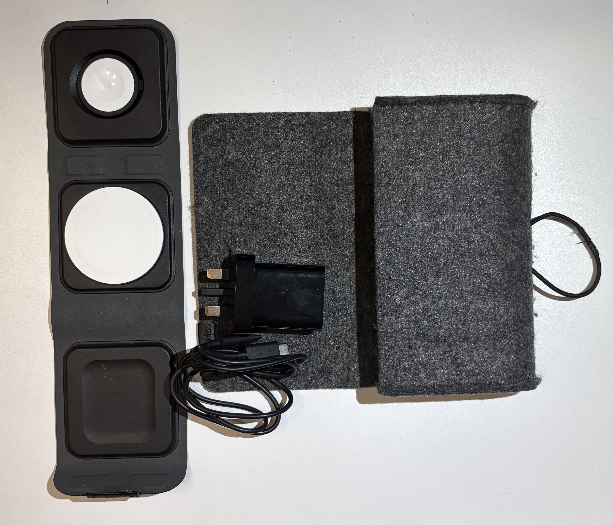
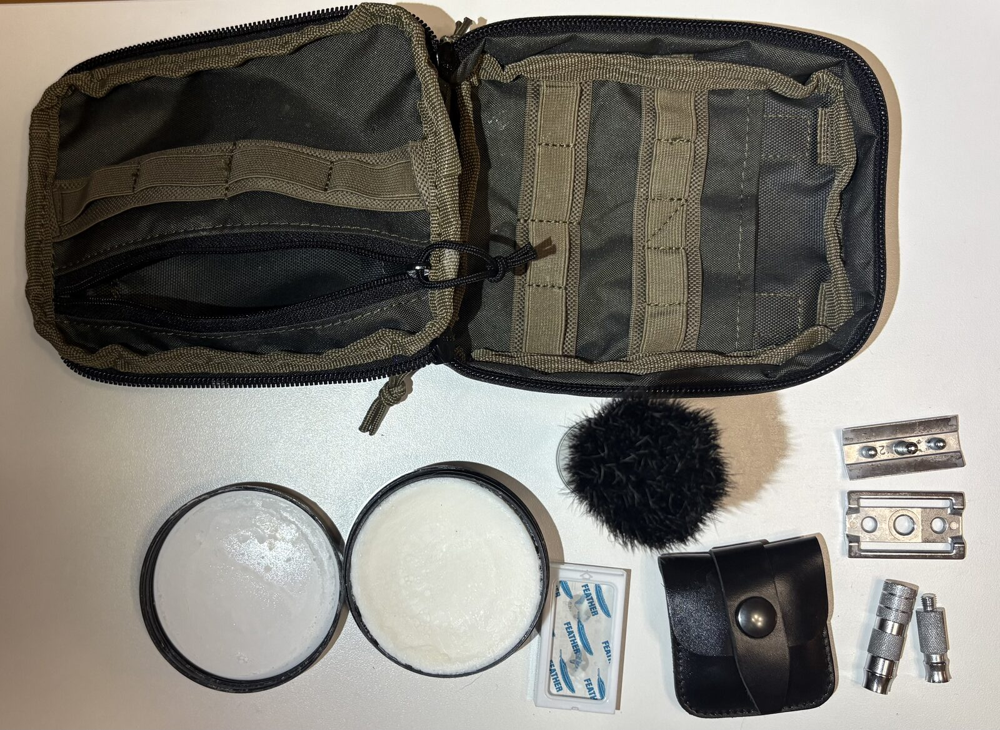
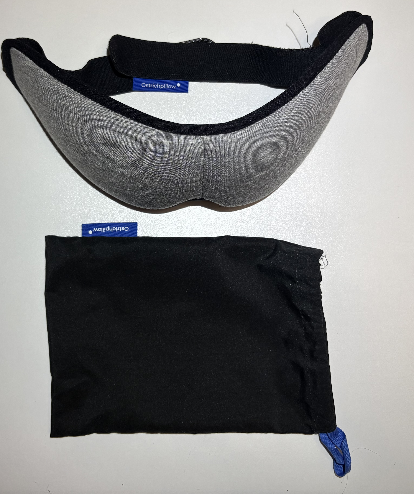

I last blogged about a “Tech Go Bag” in 2015, 11 years ago as I write this. A lot has changed so I thought it’s worth a re-review of my current setup.
Looking back, I was very eager to have a solution to every possible problem - my current setup is far more simple. I have three key items I would highly recommend now, and none are from the original post:

If I am staying away from home for even one night, all three of these always come with me, no exceptions. The mophie travel charger is a joy because everything is in one kit/soft case: cable, plug and phone/AirPods/watch charger - all very compact and neat. For different regions I simply swap out the plug, for Europe I have a European plug and the USA I have a US plug. I keep the destination one in the kit and usually have the home plug in my carry on - just in case I need it at the airport etc.
The matador wash bag is excellent, never leaks liquids. Any wet item inside will dry out. Inside it I have:
-
stick deodorant (I like Mitchum, but use a reusable brand now)
-
ear plugs
-
the philips toothbrush (as above, not pictured with washbag as was being used!)
-
a small bit of Dr. Bronner’s soap inside matador soap case - (not pictured)
-
Victorinox nail clippers and Victorinox SwissCard Nailcare (red)
-
I also have a resealable shiny backed mylar zip lock bag “first aid” kit with:
-
plasters (band-aids)
-
1 small alcohol wipe
-
common medications in individual small 2*3cm sealed zip lock bags (paracetamol, ibuprofen, Imodium, anti-histamine)
-
The Philips toothbrush is self-contained with a case and no charger needed - just a single AAA battery which is easy to find in most parts of the world. It fits inside the matador wash bag and I keep all personal care items in that bag. The key “3” as I’ll call it are all space-efficient and carry on friendly, so no matter where I go I can take them. So in total I have 2 regular bags: The Matador Wash bag and Mophie Charging kit.
I then add other “bags” as required. The next most important set is eBags. I bought eBags a long time ago and still use them. They are great for sorting clothing items and making your main bag more manageable. It’s worth noting that eBags I use do not save any space, they’re purely an organisational tool. After this I add “bags” based on purpose, two are more frequent:
- Shaving kit bag
- Portable travel wifi/ethernet router - Beryl AX

The shaving kit bag contains:
- A double edged travel safety razor - Merkur 933CL
- Travel shaving soap / Travel shaving brush both by Edwin Jagger
- A pack of DE blades (usually Feather blades)
The shaving kit and travel router only come with me if the trip is a week or longer (or is a business trip where it’s important I stay neat looking!). I may throw in an odd missing item after that, like a sleep mask. You may have noticed some key items like a powerbank missing - this is where I’ve added a “day pack” which I’ll cover in the next post.
